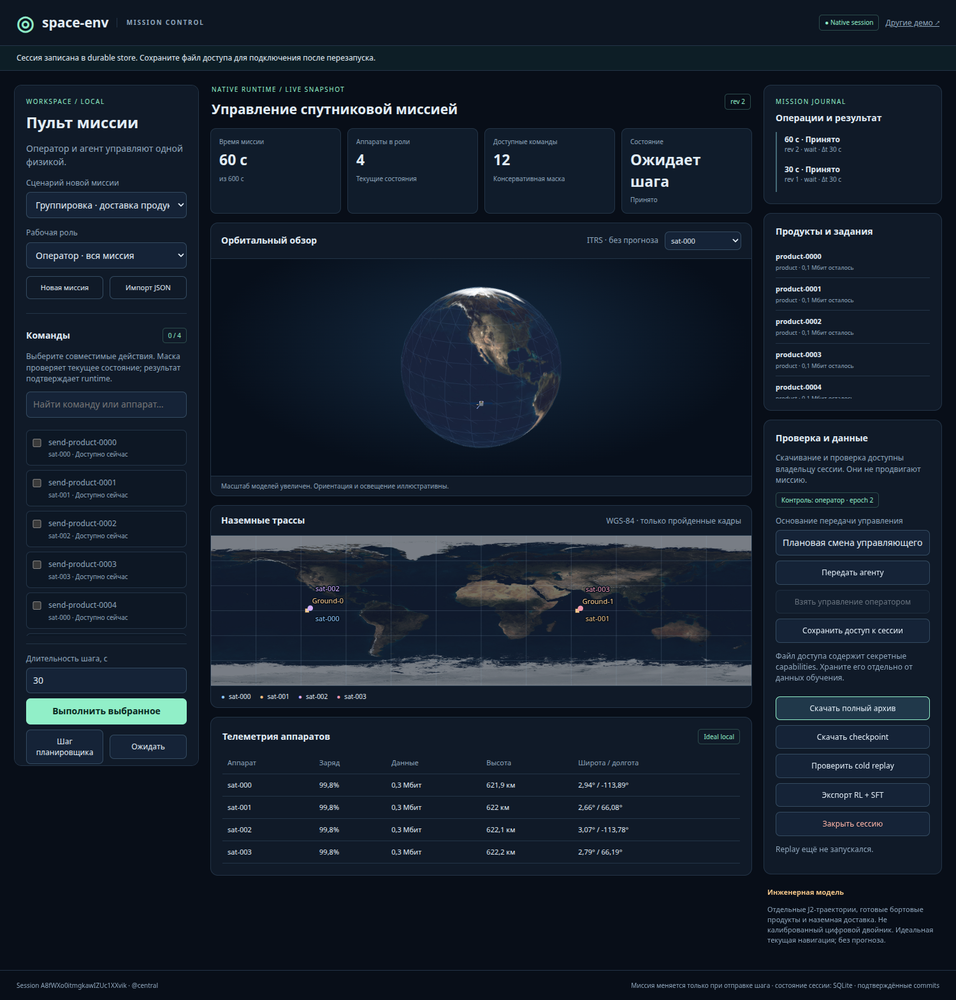

Физика влияет
на результат
Движение, ориентация, питание и температура участвуют в выполнении операций. Состав механик выбирается конфигурацией, а не подразумевается одинаковым для всех аппаратов.
Изучить физику ↗Спутники. Группировки. Автономные решения.
Постройте свой мир космических операций — и обучайте агентов действовать в нём.
Хорошая орбита ещё не означает выполненную задачу. Агенту нужно вовремя снять цель, обработать продукт, выбрать маршрут и получить подтверждение доставки — с ограниченным зарядом и общими наземными ресурсами.
Движение, ориентация, питание и температура участвуют в выполнении операций. Состав механик выбирается конфигурацией, а не подразумевается одинаковым для всех аппаратов.
Изучить физику ↗Несколько аппаратов, роли, межспутниковая передача и наземные терминалы. Совместные решения исполняются на одной временной шкале.
Как устроен MARL ↗Native replay проверяет переходы. RL/SFT-экспорт сохраняет происхождение политики; синтетический сценарий не выдаётся за реальный полёт или экспертную демонстрацию.
От миссии к датасету ↗Исследуйте типовые задачи. Ниже — схема реализованных механик, а не запущенный в браузере симулятор.
Аппарат получает данные, обрабатывает их на борту и передаёт через ретранслятор. Результат засчитывается после наземного подтверждения, а не после отправки первого фрагмента.
Аппараты на орбите, наземные трассы, доступные команды и история исполнения — в едином пульте оператора и агента.
Исследовать Mission Control ↗
Новый task-слой использует MissionRuntime. SDK, Gymnasium, PettingZoo и структурированные инструменты обращаются к одному механизму выполнения; legacy Gym-среды остаются отдельным слоем.
Причинные наблюдения · роли и маски · проверка допуска · единое физическое время
Мы разделяем программную корректность, инженерную применимость и независимую физическую валидацию. Число тестов само по себе не делает модель цифровым двойником.
Синтетическая EO→CPU→ISL→Ground ACK миссия: 10 решений, restart, передача управления, replay и экспорт.
Регрессионный профиль на срезе v0.134.0. Дополнительно: 56 operator/durable, 5 legacy API и 110 fast; наборы пересекаются.
Побайтовое совпадение с исходниками. Installed smoke вне checkout использовал system-site-packages; это не clean-room квалификация.
Запустите готовый пример, проверьте воспроизводимость и замените задачу своей. Сначала понятная физическая постановка — затем масштабирование обучения.
Открыть руководство ↗